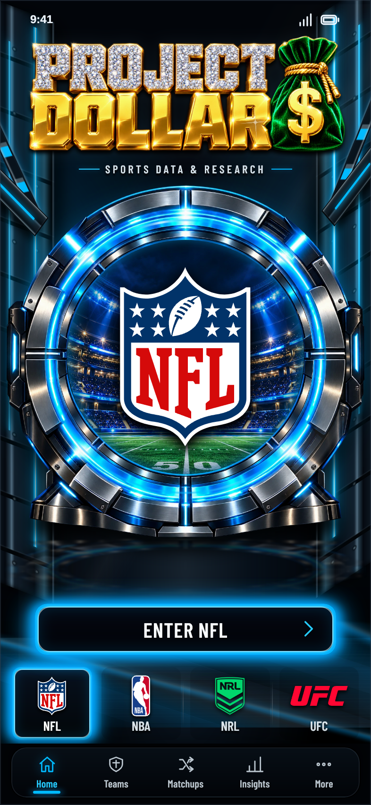
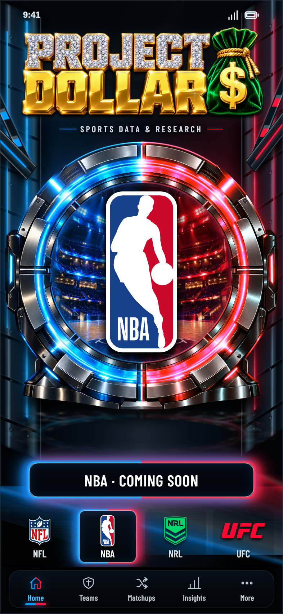
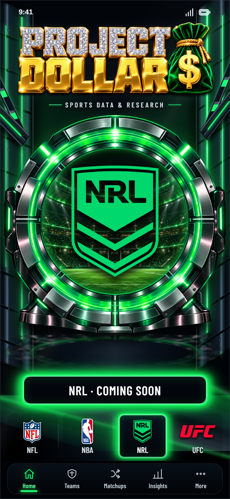
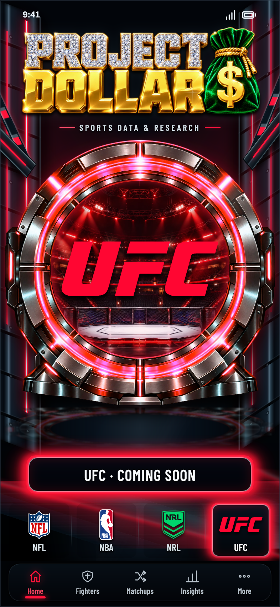
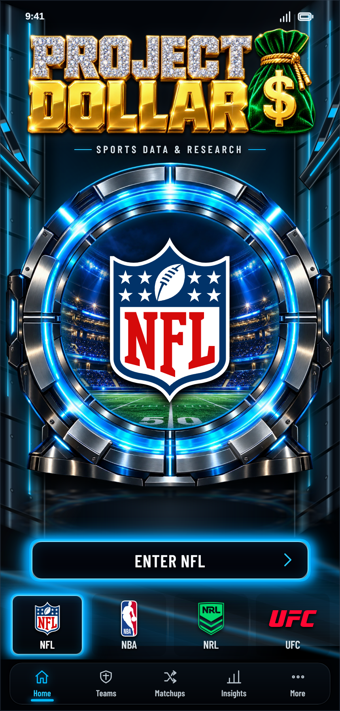
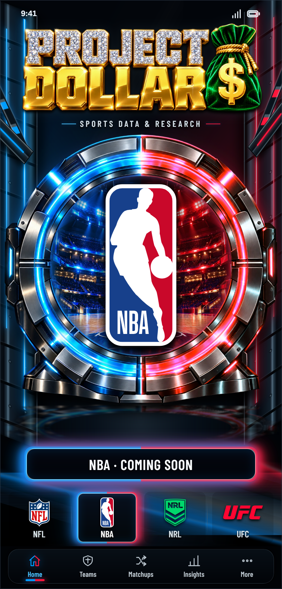
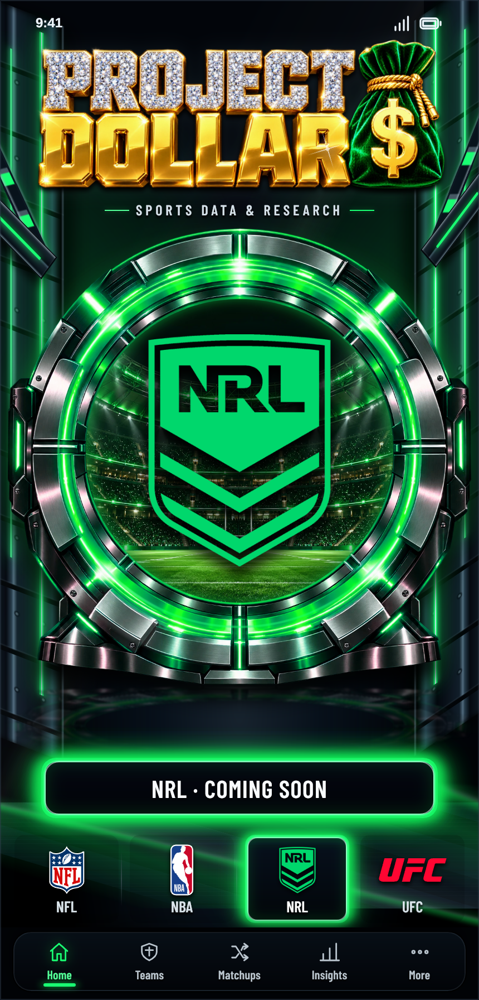
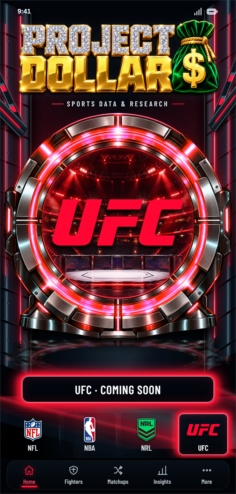

Eight unaltered browser screenshots of the actual app. Motion remains running during exposure; these are not generated concept renders. The approved visual reference is the reattached four-sport Home gate render in chat; original reference bytes have not been supplied as a local file. Source comparison requires independent human review against that chat render. Physical iPhone hardware and Safari browser controls are not tested.
Captured Wednesday, 7 October 2026 at 12:38:17 pm AEDT. Source hashes, geometry and qualifications.







